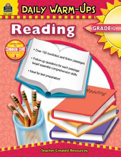

DW1-sinf o'quvchilari uchun kundalik o'qish va tushunish mashqlari to'plami.
Ushbu kitob 1-sinf o'quvchilari uchun mo'ljallangan bo'lib, kundalik o'qish va matnni tushunish ko'nikmalarini rivojlantirishga qaratilgan. Unda badiiy va ilmiy-ommabop matnlar hamda ularga oid tahliliy savollar jamlangan.